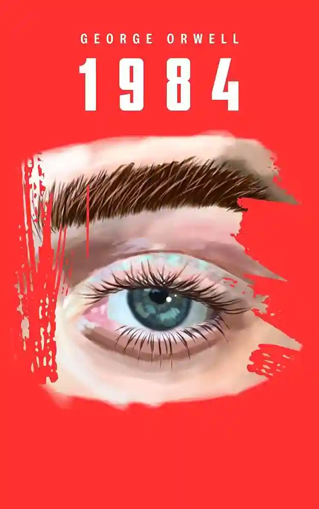

1984
Roman
Dans une société dystopique dirigée par Big Brother, Winston Smith travaille au ministère de la Vérité où il falsifie l’Histoire. Oppressé par un régime totalitaire qui surveille tout, il tente de se rebeller en recherchant la liberté et l’amour. Mais peut-on vraiment échapper à Big Brother ?